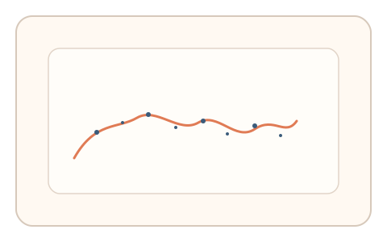
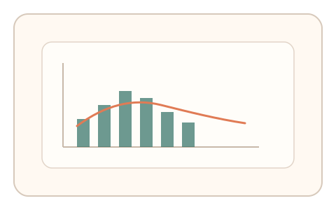

#2
生物肌肉与鼠标运动
已扩展
微抖动签名轨迹
以人类不可避免的微抖动为核心证据，验证“真实肌肉在场”而非轨迹是否画对。
概念原文
用户以较慢速度描绘一条给定轨迹，系统采集高频微抖动与速度微波动的统计指纹，不要求轨迹完美，只评估“人类肌肉噪声分布”。可设置多次短轨迹以提升稳健性。
不依赖识别任务，而是验证“生物噪声”本身，机器人需要复刻微抖动分布而非画对图形。
研究背景
生理性微颤与运动噪声是人类精细动作的固有特征，即便刻意控制也难以完全消除；行为生物识别领域也常利用输入微特征进行区分。因此可将“抖动频谱与微波动”作为人机差异信号，而不是要求任务结果精准。
核心机制
- 提供一条低速描摹路径或窄通道，引导用户进行稳定手部控制。
- 高频采样指针位置，提取微抖动频谱、速度微波动与细小纠偏。
- 允许轨迹存在偏差，仅对“噪声分布与结构”进行判定。
- 通过多段短轨迹累计统计，提高稳定性。
用户流程
- 步骤 1：用户看到一条参考轨迹与提示“缓慢描摹”。
- 步骤 2：用户按提示移动指针，系统采集高频轨迹与时序。
- 步骤 3：系统生成微抖动谱与微速度曲线，并完成判定。
判定信号
抖动频谱分布（低频 1/f 结构与高频能量比例）
人类细微运动常呈现稳定的噪声结构，脚本难以自然复刻。
速度微波动与“细小纠偏”次数
真实肌肉控制会出现连续微调与轻微过冲。
判定逻辑
以“噪声窗口 + 多信号一致性”为判定：抖动谱不得过度平滑或过度随机，并与微纠偏节律协同；多段轨迹内一致性作为加权指标。
对抗面
- 脚本注入伪随机抖动以模拟人类噪声
- 重放已采集的人类轨迹或使用硬件回放设备
防御与缓解
- 引入动态轨迹与随机采样窗，降低重放复用率
- 多信号耦合（抖动谱 + 速度曲线 + 过冲回拉）提高伪造成本
- 对过度稳定或过度随机的轨迹进行双向异常检测
可达性与风险
为手部障碍用户提供“阈值调节/按钮节拍”等等效通道；允许放宽噪声阈值并避免过度精细的连续控制。
- 手抖或疾病引发的异常噪声可能导致误拒
- 设备采样率差异与系统级平滑可能影响信号一致性
可视化状态

状态 1：轨迹引导
给出参考轨迹与窄通道，引导用户低速描摹。

状态 2：微抖动采集
轨迹出现细微抖动与纠偏，系统采集高频点列。

状态 3：频谱判定
生成抖动频谱与速度波形，判断是否落入人类噪声窗。
参考资料
Physiological tremor
说明人体不可避免的生理性微颤来源。
Behavioral biometrics
行为特征可作为身份识别与区分依据。